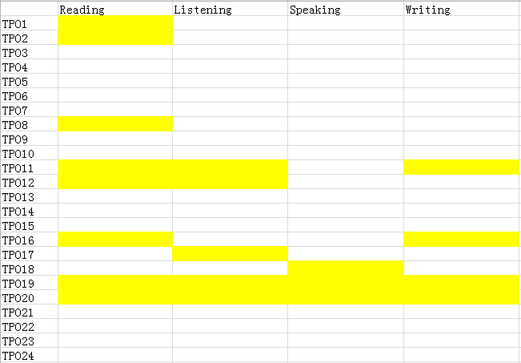
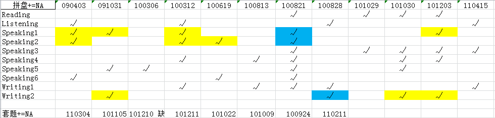

万幸，我的TOEFL最终基本够用了
起初规划复习时间为5月6日 → 5月20日，实际不到两周。Oh，我的行动力、我的拖延症+_+
哦，最终是103=27+28+24+24，阅读和写作比一年前还降了 =.= 不过听力和口语有提高是预料之中的，很开心~
– by Andriy
背景
4.21G → 5.20T
二战，11年6月一战半裸99
未报过XDF
关于身体
要我说，考前最后几天就千万不要想着多复习一点而少睡一点，而且考试那天早上就不要再看资料了吧！
- 前一天晚上为什么不看好
- 亲身经历：我在当天上午看了半小时左右的口语段子，到听力的时候脑子就有点昏了，看选项都难以集中注意力，幸好听力可以靠记笔记来帮助凝神！
OG & TPO
首先，OG真的太简单了！了解题型、看作文的高分低分范文、看出题的思路，其他就找TPO去吧！
还没有TPO的时候，巴郎、Delta什么的还是很盛行的，不过TPO可是ETS的亲儿子呢！
1战时，只做了TPO的1和2。2战也没有全部做完。如果时间充足还是都做了吧，得分析归纳总结，而且有人说只做一遍是不够的…
在我自己做的时候，一直想知道当时间不够，该选哪些来做？听力有人给出了难度表，不一定准，毕竟因人而异。

关于阅读难度：1、2肯定是入门级别的，然后听无老师的教诲做了8与11，说是与真正考试难度相仿，可做完我觉得肯定还没到实战的难度。网上有人说16、19什么的最难，不过我没什么感觉，可能他们是一下生词太多了吧。反倒是做12的时候时间不够+错了很多，事后分析应该是
- 和之前的TPO11比难度增加了
- 当时在宿舍环境嘈杂。
注：和GRE的经验贴一样，原本我把资源放在115上，后来它关闭外链分享了就不方便了，反正我的资料也基本都是大论坛上下的呢，无所谓啦~
WORDS
因为考了G再考的T，单词不是什么大问题。
挑了单词量最多的《王玉梅》，大致刷了一遍，把不熟悉的词摘出来，然后单词复习就只看了那600多个不熟悉的词。
话说一战的时候我看了《无老师TOEFL词汇红宝书》，里边的词似乎都是从TPO里出来的，二战到最后没有时间再看它了…
READING
非常非常推荐按照题目看文章！和G不一样，T的出题顺序和考点在文中出现的顺序是一致的，再加上T的每一题都会指出在文中对应的段落，不这么做简直是自虐啊！
考了G就真心不觉得T的阅读算什么，如果长难句有困扰就看这本《GRE&GMAT阅读难句教程》！
关于最后一题6选2文章主旨，我的经验：分两种：
- 细节错误
- 没错，但不是重点
对于1，我觉得根据题目看了一遍全文、题目做到最后一题，就会对文章有大致印象了，毕竟之前题目会一题都不考重点么！一般至少2个是可以这么排除掉的（当然有时间最好还是定位回原文吧…）。
对于2，那些只描述只在某一段中出现的某个细节的选项，一般是错的。
据说标准方法是根据每段的主题句。
LISTENING
听力临时抱佛脚肯定是没有用的啦！话说我从11年3月左右开始听podcast，虽然都只是泛听，浪费了大好时光，但是还是有很大的提高的！精听强烈推荐SSS（Scientific American 60 Second Science），听完就会觉得T的听力怎么这么慢啊！Android上推荐用Beyondpod，iOS上有苹果官方的Podcast，电脑上定然就用iTunes了吧。
关于做笔记：也许有人能听一遍就把该有的细节都记住了，反正我是不行的。因此我倾向于要做笔记，不过一切以听为主，千万不要为了写一句话而把下一句话给漏听了！
没记到也无所谓，考场上亢奋状态的记忆力经常让记笔记成为只求心安。还有一些记笔记的小技巧，比如说对话就画一条竖线跟短信一左一右的效果一样。
有人说听多了会有直觉哪里是出题点，反正我是没到境界..
SPEAKING
我想我应该没有多少发言权T_T。自言自语也翻来覆去就是那么几个词，没什么提高的！6题里最令人心慌慌的也就是task1和task2，后头的3456考听力+笔记…（所以有人说得听力者的天下啊）
真正复习有一周左右的时间，把task1的往年考题放到一起，自己一个个准备一遍。几十道题掐着表来一遍，怎么也会有点感觉了吧！拿别人写好的段子来背是没有用的，背起来费力又容易忘，不过不知道怎么说的时候瞄一瞄还是OK的吧。
推荐看一位考119的同学的经验之口语部分。
资料里的《American Accent Training》很有意思，虽然我只跟着念了一天就因为时间不足只好中断了…还有《2011年口语真经3》很推荐！
WRITING
还是因为考过G，作文压力不是很大，话说考场上的独立作文就因为太放松了，没时间检查…[抠鼻]
看了张红岩的《十天搞定TOEFL作文》，虽然看书的时候连10天不够了，但我觉得文中的14条“效率-方便-经济-耐久-安全-空间 && 健康-乐趣-成就-性格-感情-交流-经验-他人”很有用！从此不再无从破题，从这么些方面去找立场，so easy！当然这个是保底的，实在不知道怎么写了再用上。
我把OG里给的那些题目，一题一页在word里摆开，发现正好184页！这应该就是著名的185题库了，不过不知道我在哪里分页分错了…分好题目之后我就没有像准备G的时候一样每题列个提纲了，首先考试的题目不一定在这185里，其次哪有那个时间啊！=_=
另外推荐“iBT高分作文（完美重排版）.pdf”，首先它制作的好！其次185题每一题都有范文！
加试
关于加试，看这里，然后应该就够了吧…
印象中一战的时候好像遇到了阅读的加试，不过考了什么就根本不记得印象了。二战遇到了听力加试：霸王花，ragtime，鸟类迁徙！
机经
一战我连什么是机经都不知道。但是二战中机经的作用！！！

表格里是拼盘，就是可能抽出题目来组合成一套的那些机经，下边一栏的套题是一整套，这是小马放出来的。机经只看口语12和独立作文就够了，也没那么多时间把全部看完，而且阅读和听力的机经，即使看了该不会的还是不会。
小马说这次考拼盘的可能性比较大，但我套题还是看了，蓝色是实际考题，瞧这命中！
考场
上外居然不允许换草稿纸！[抓狂]
而且位置不大，我正好在最中间，坐的好挤！
旁听口语1、2
话说一战的时候不怎么清楚加试的事情，早早进入考场后，点下一步下一步于是就开始计时了！然后看到没几个人已经开始了，心里就有点慌，听力什么的都是耗到最后5秒再继续。然后遇到了阅读加试…等我做完正好大约有一半人中场休息了。
二战遇到了听力加试，这次每个section是有意耗完10分钟再Next，于是仍旧结束的比较晚。当我休息完重新进入考场的时候，休息时间还有3分钟，而左边的同学正好在讲口语task1——是关于spend money，在我磨磨蹭蹭还等在口语部分的介绍的时候，左边的同学讲了task2——是关于fashion clothes！^_^
所以关于听题目是可行的！至于会不会德行有亏…我是这么想的：首先他/她自己的分数并不会因此降低；而且听到了该不会还是不会…也许是守恒，我在task2居然还有磕磕绊绊的情况，脑子不清楚啊=_=
结语
平时积累是王道啊！
求人品！O_O